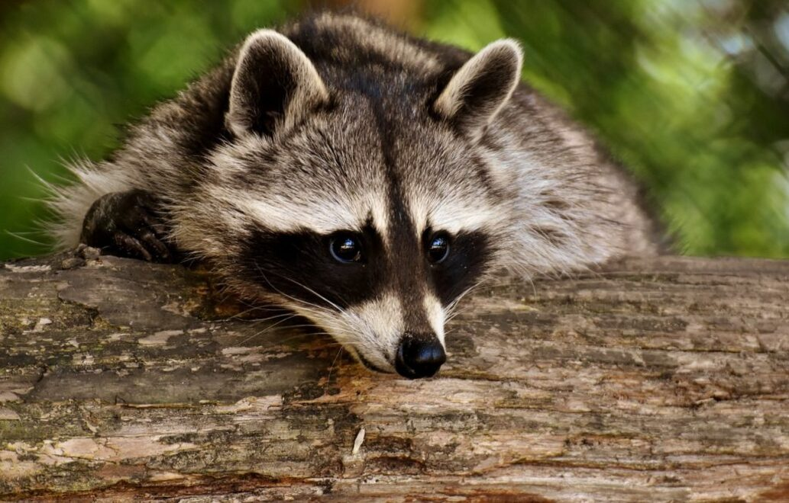
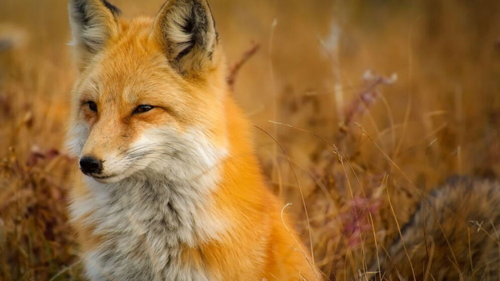
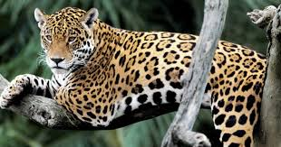
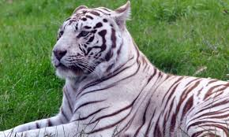
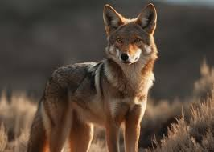
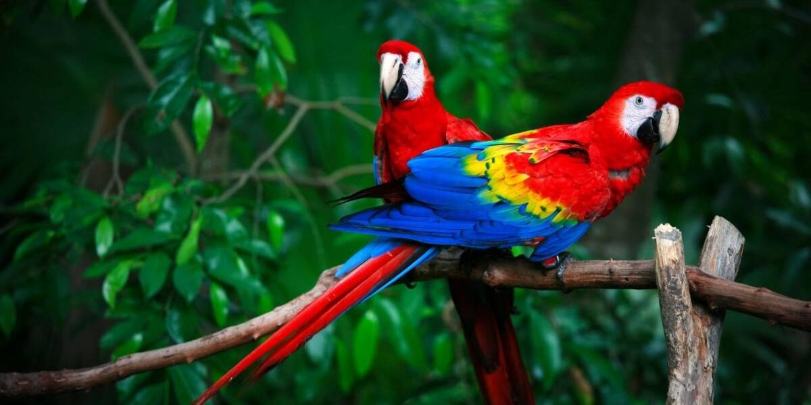
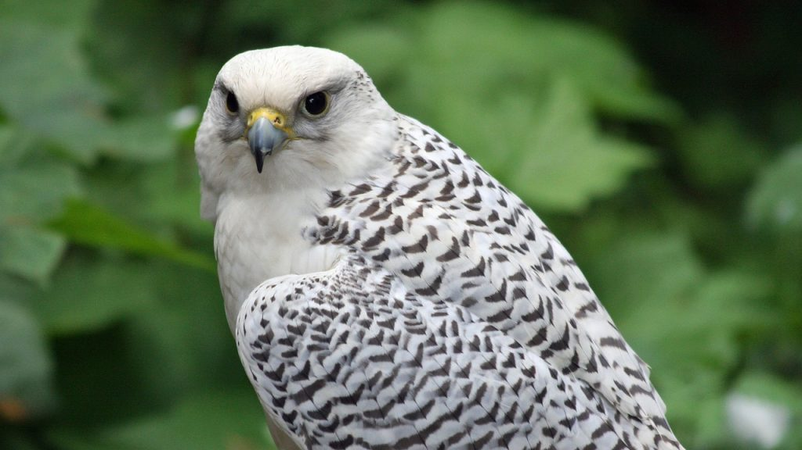

ANIMALES
Mapache
El mapache es un mamífero omnivoro de tamaño mediano, conocido por su pelaje gris, cola anillada y una característica "máscara" negra alrededor de los ojos. Es ágil, inteligente y adaptable, habitando bosques, zonas urbanas y áreas cercanas a cuerpos de agua
Zorro
El zorro es un mamífero carnívoro de tamaño mediano, con cuerpo esbelto, orejas puntiagudas, hocico alargado y una característica cola tupida. Su pelaje varía según la especie, siendo el rojizo más común. Es ágil, astuto y habita en una variedad de entornos
Tucan

El tucán es un ave tropical de pico grande y colorido, con plumaje brillante. Vive en selvas de América Central y del Sur, se alimenta principalmente de frutas y juega un papel clave en la dispersión de semillas. Su vuelo es corto y directo.
Juaguar
El jaguar (Panthera onca) es el felino más grande de América, conocido por su gran fuerza y agilidad. Su pelaje es dorado o amarillo con manchas negras en forma de rosetas. Habita en selvas y bosques tropicales de América Central y del Sur, donde es un cazador solitario y nocturno. Su poderosa mordida le permite cazar presas grandes, como ciervos, caimanes y aves. Actualmente, el jaguar está en peligro debido a la pérdida de su hábitat y la caza furtiva.
Tigre Blanco
El tigre blanco es una variante del tigre de bengala, con pelaje blanco debido a una mutación genética. Tiene un tamaño similar al tigre naranja, midiendo entre 2.5 y 3 metros de largo y pesando entre 180 y 250 kg. Es un depredador apex, cazando presas grandes en su hábitat natural, como selvas y bosques de Asia. Hoy en día, los tigres blancos se encuentran principalmente en zoológicos debido a su rareza. Su cría en cautiverio ha generado controversia por posibles problemas de salud derivados de la cría selectiva.
Coyote
es un mamífero de la familia Canidae, similar al lobo pero más pequeño. Tiene un pelaje marrón grisáceo y una cola larga, con orejas grandes y puntiagudas. Se encuentra en América del Norte, adaptándose a diversos hábitats, desde desiertos hasta áreas urbanas. El coyote es omnívoro, alimentándose de pequeños mamíferos, aves, frutas y restos. Es conocido por su capacidad para vivir en grupos o de manera solitaria, y su vocalización característica, a menudo en forma de aullidos.
Panda Rojo

es un mamífero pequeño, similar a un mapache, con pelaje rojizo y una cola larga y esponjosa. Habita en las regiones montañosas del Himalaya y el suroeste de China, prefiriendo bosques de bambú. Su dieta se compone principalmente de bambú, aunque también consume frutas, insectos y pequeños mamíferos. Es un animal nocturno y solitario, y es conocido por su agilidad y capacidad para trepar árboles. Actualmente, el panda rojo está en peligro de extinción debido a la pérdida de hábitat y la caza furtiva.
Guacamayo
El guacamayo es un loro grande y colorido, conocido por su plumaje vibrante que incluye tonos de azul, verde, rojo y amarillo. Habita en las selvas tropicales de América Central y del Sur, principalmente en Brasil, Colombia y Venezuela. Se alimenta de frutas, nueces, semillas y flores. Es un ave social, que suele vivir en grupos y es conocida por su inteligencia y capacidad para imitar sonidos. Debido a la destrucción de su hábitat y la caza, algunas especies de guacamayos están en peligro de extinción.
Halcon
El halcón es un ave rapaz de tamaño mediano a grande, conocida por su velocidad y agilidad en el vuelo. Su plumaje varía entre especies, pero suele ser de colores gris, marrón o blanco con marcas distintivas. Se encuentra en una variedad de hábitats, desde montañas hasta áreas urbanas, y se alimenta principalmente de aves y pequeños mamíferos. Los halcones son excelentes cazadores, usando su aguda visión para detectar presas desde grandes alturas. Son famosos por su velocidad en picada, alcanzando velocidades superiores a los 300 km/h